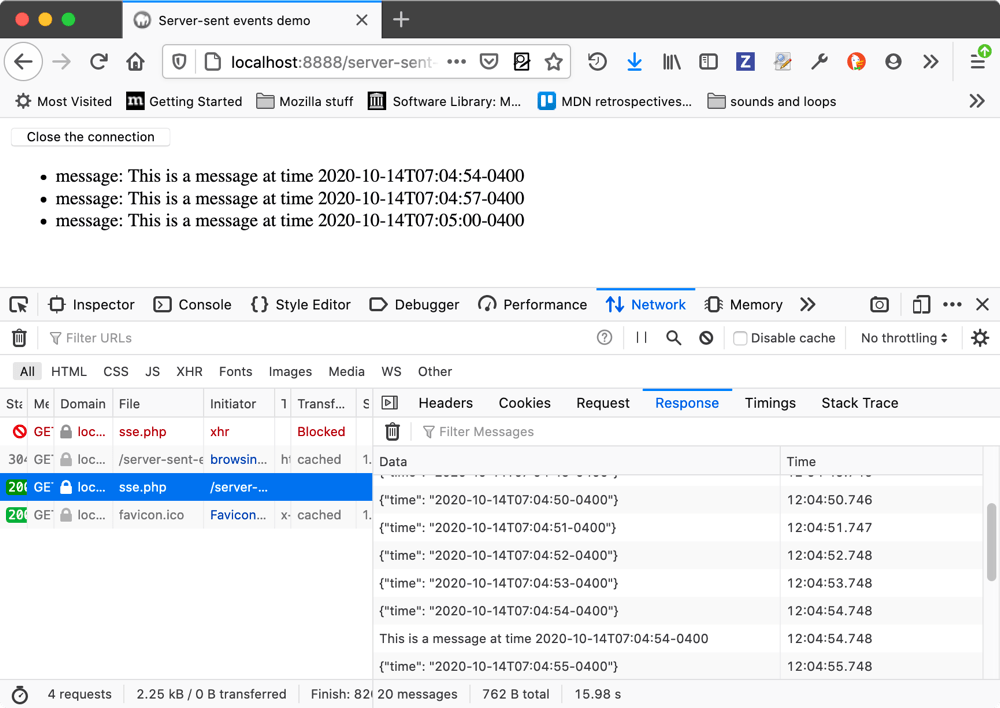
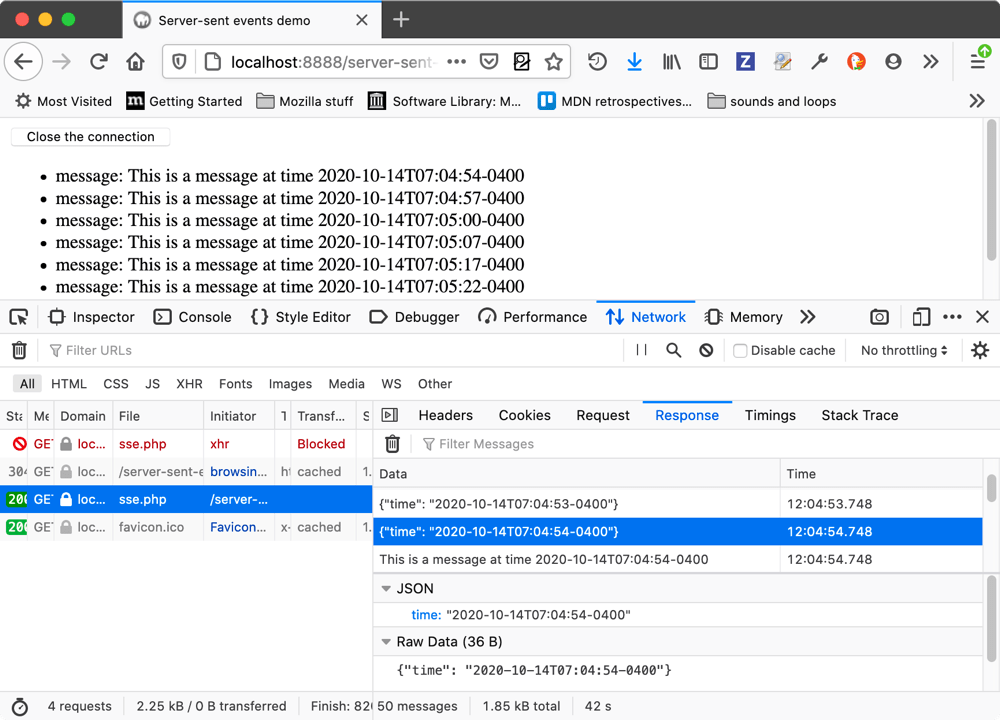
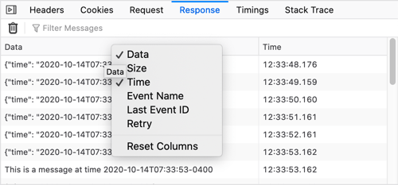

{{ToolsSidebar}}
Server-sent events allow for an inversion of the traditional client-initiated web request model, with a server sending new data to a web page at any time by pushing messages. From Firefox 82 onwards, you can inspect server-sent events and their message contents using the Network Monitor. This article shows you how.
When you are viewing a document that is receiving server-sent events, you can go to the Network Monitor, select the file that is sending the server-sent events, and view the received messages in the Response tab on the right-hand panel.

At the top of the panel there is a trash can icon, which allows you to trash the messages sent so far, and a filter field in which you can enter a text string to filter the displayed messages by.
Select one of the messages listed in the Response tab, and you'll see the message contents displayed at the bottom of that same tab.

In the above example, you can see that JSON and raw data representations of the content are shown. For a plain text message, you'd just see a raw data section.
The supported data formats are as follows:
For each message, you'll see Data and Time columns by default, but you can right-click on the table header to bring up a context menu in which you can toggle columns on and off, and reset it back to its original state.

The available columns are as follows:
message or ping).